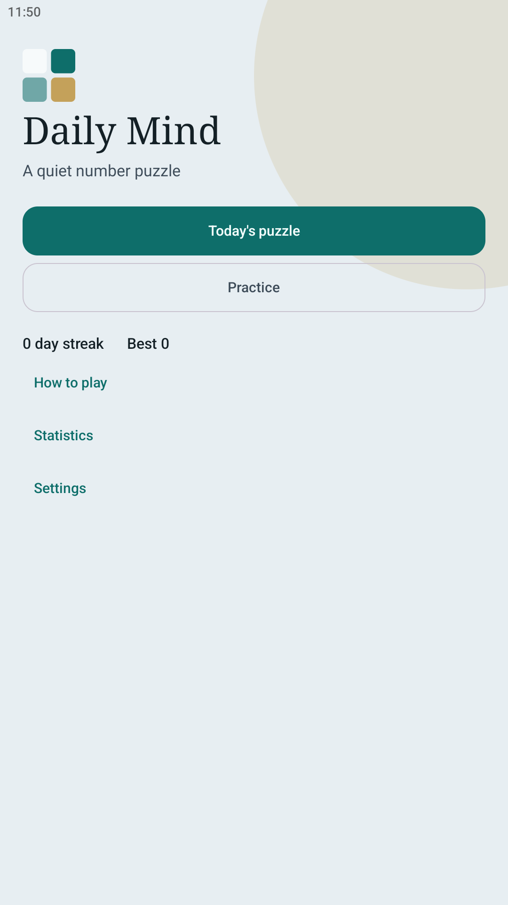
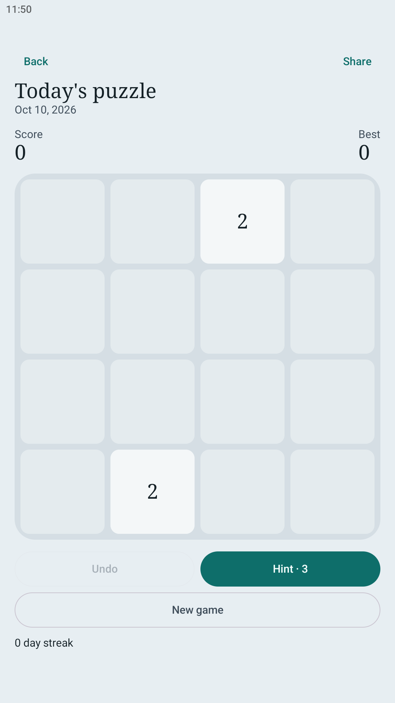
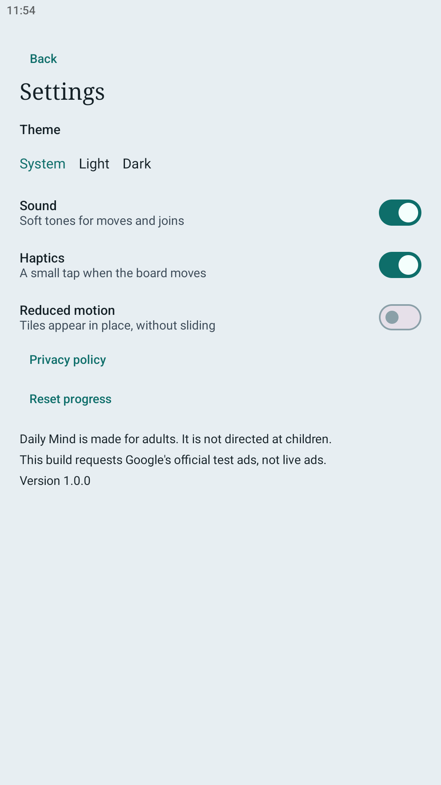

One board for today.
Swipe the grid. Matching numbers join into the next one. Clear 2048 and the day counts toward your streak.
The same date makes the same puzzle on every device. Practice is there when you want another round. The game runs without a connection, and nothing you play is sent to an account.



How a move works
Swipe left, right, up, or down. Every tile travels that way. Two equal numbers that meet become their sum, and that new number is added to the score. Each tile joins at most once in a swipe, so a fresh number does not keep combining in the same move.
A new 2, or sometimes a 4, appears after a swipe that actually changes the board. A swipe that cannot move anything leaves the board alone.
The round ends when no direction can change the board. Reaching 2048 is the clear. You can keep playing after that.
Today, then practice
The daily board is chosen from the calendar date in your current time zone. It changes at local midnight. Playing it does not need a network, and finishing the same date twice does not add another streak day.
Practice starts a separate board. Its score and best score stay apart from the daily puzzle.
Undo and hints
Undo steps back one move. It does not give a spent hint back, and it does not rewind past the swipe that first reaches 2048.
A hint shows a strong direction and spends one charge. You start with three. A short ad can add one hint, or, once the board is stuck, clear the two smallest tiles. If the ad does not finish, the board stays as it is.
On this phone
Games, scores, streaks, and settings stay in the app. There is no Daily Mind account. Reset progress in Settings clears the saved games and leaves your sound, theme, and motion choices in place. Uninstalling removes the local data.
Sound, haptics, a dark theme, larger text, and reduced motion are all in Settings. The board can be read by a screen reader, cell by cell.
The game is for adults and is not directed at children.